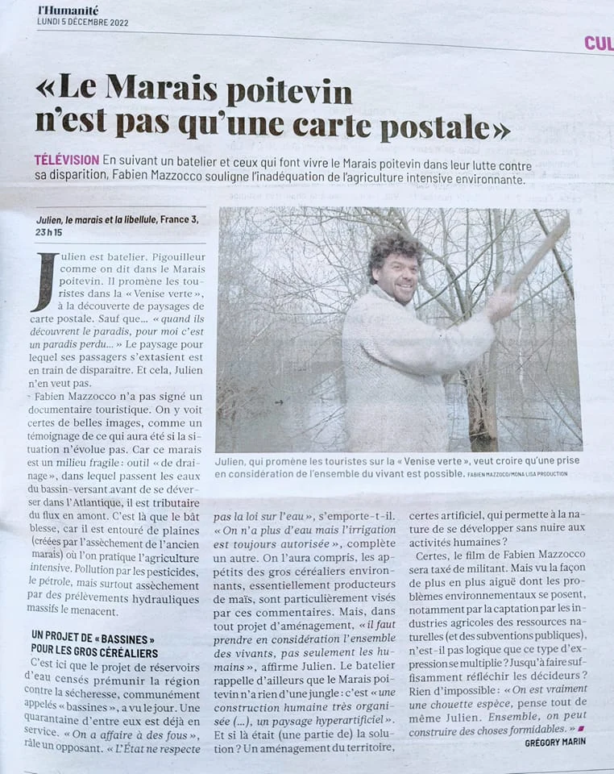

Publication d’archives
Le marais Poitevin n'est pas qu'une carte postale.
Date indiquée par Facebook · 5 décembre 2022
Texte conservé avec la publication
Contexte du dossier
Le 5 décembre, la fédération recommande un documentaire de France 3 : le Marais poitevin ne se réduit pas à une carte postale. Le 28, elle relaie, en tant que signataire, l’appel de Bassines Non Merci aux rassemblements de soutien des 5 et 6 janvier 2023 devant les tribunaux de La Rochelle et de Niort. Le texte concerne sept personnes poursuivies à la suite d’actions de septembre et novembre 2021 ; il revendique la solidarité collective et l’état de nécessité. Cette publication annonce les audiences et expose la position des soutiens. Elle ne fournit ni jugement de janvier ni bilan de la mobilisation annoncée.

Sources
Archive rouge · export Facebook · AR-0002-FB-01803
À lire aussi · 5 et 6 janvier – Appel à mobilisation pour les procès de la résistance contre les bassines